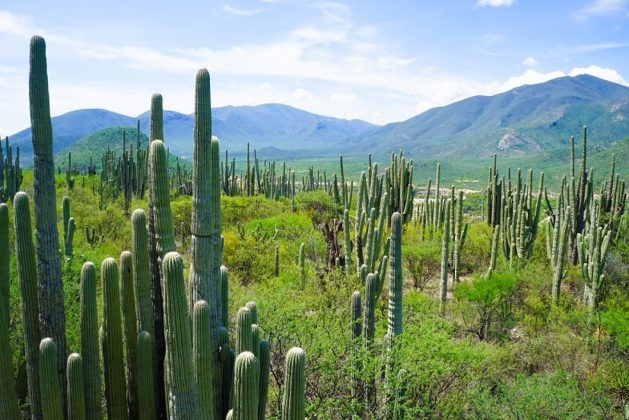
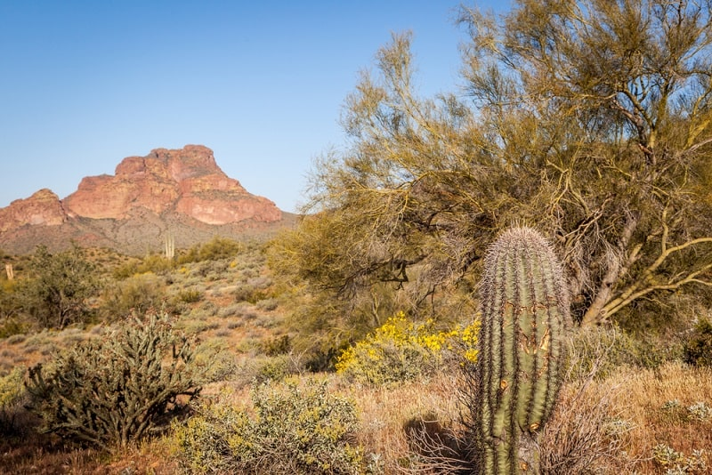
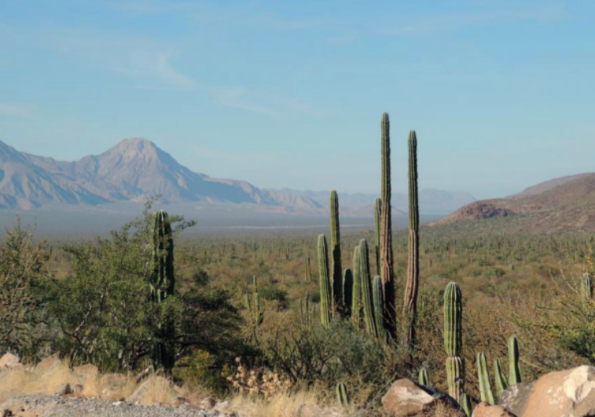
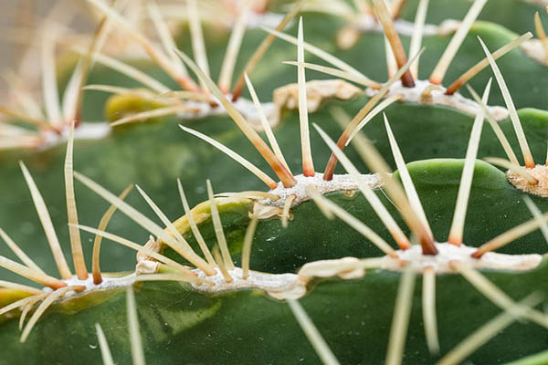
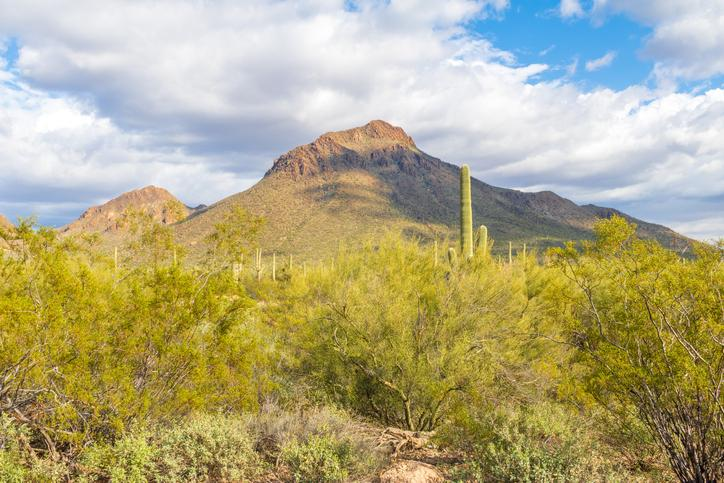
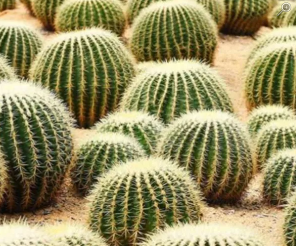

Bosque espinosoEs difícil delimitarlo ya que pasa de forma paulatina a ser bosque tropical caducifolio,
matorral xerófilo o pastizal; se encuentra en forma de manchones entre esta vegetación.
Ocupa en el país 5% de la superficie total y se encuentra entre 0 y 2200 msnm.
Su clima es cálido templado y semihúmedo hasta seco. La temperatura varía de 17 a 29 °C;
con precipitaciones entre 350 a 1200 mm. Presenta una época de secas que dura de 5 a 9
meses.
Posee un suelo propicio para la ganadería, por lo que ha sido sustituido en algunas partes
del país por pastizales artificiales para el ganado.



Se caracteriza por estar formado de árboles espinosos como la acacia, el mezquite, el tintal,
el palo blanco, el cactus llamado cardón, cuachalalate y guayacán. Hay un gran número de
plantas cultivadas en lugares donde había este tipo de ecosistema, como caña de azúcar,
tomate, plátano, trigo, arroz y algodón.



La fauna se encuentra formada por arañas y ácaros; insectos como hormigas, chinches,
pulgones, escarabajos y mariposas; reptiles como lagartijas, cuijas, algunas especies de
serpientes de tamaño pequeño, aves y mamíferos como roedores.
Angel Esteban Tabardillo BrionesDayann Gerardo Cordova ArmendarizJuan Pablo Ortiz GonzalesIvan Alberto Rodriguez HernandezJose Rigoberto Martinez Peraza